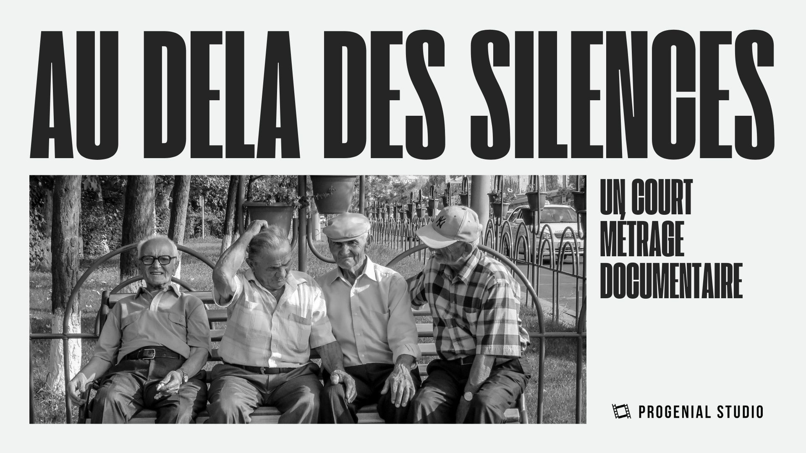

Au-delà des silences
About the project
I took part in the production of a documentary titled "Au-delà des silences", which sheds light on the isolation of elderly people. I was part of the audiovisual team, where I worked as an assistant director and assistant editor. This short film was originally a final-year project by a group of master’s students at UVSQ.
The Process
In this project, my role involved preparing interviews and planned scenes, as well as coordinating the technical teams. I was also responsible for sorting and organizing the raw footage to facilitate the editing process.
Web documentary

About the project
I participated in the creation of a web documentary on OSINT (Open Source Intelligence) and its impact on the fight against disinformation. Through videos, articles, and a website, the project demonstrates how OSINT helps journalists and citizens verify information they find on the internet and separate fact from fiction.
The Process
For this project, I created a motion design in After Effects to introduce OSINT. I started by researching this technology to structure the script and narrative flow of the video. Then, I created a storyboard to organize the different shots. Finally, I produced the video using After Effects.
EPK Jean-Marie Lavallé
About the project
As part of an academic project, I was tasked with stepping into the shoes of a journalist to interview Jean-Marie Lavallé, composer and creator of the YIM machine, YIM machine, in order to produce his EPK (electronic press kits).
This shoot allowed me to experience audiovisual production from the front of the camera rather than behind it, which was a completely new perspective for me. Trying my hand at journalism was a first for me, and I loved the experience.